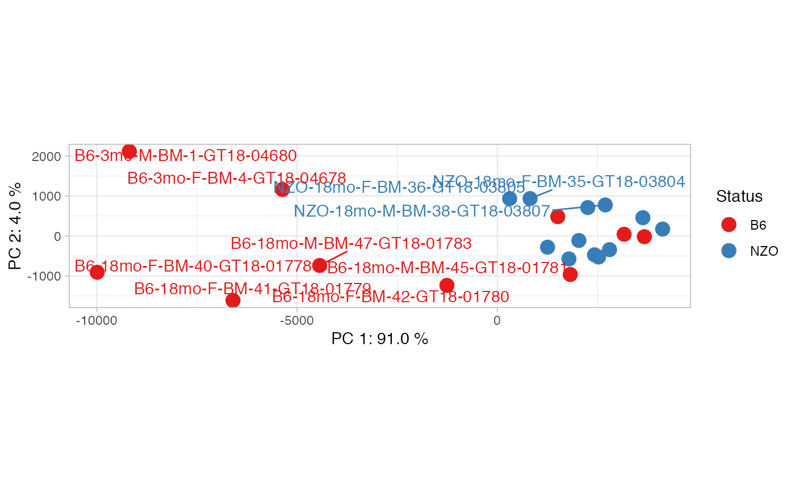

pca_plot
pca_plot(results, overlaid.info, sample.names = NULL, show.names = TRUE)
Arguments
| results | cinaR result object |
|---|---|
| overlaid.info | overlaid information onto the samples |
| sample.names | names of the samples shown on pca plot |
| show.names | logical, if set FALSE sample names will be hidden |
Value
ggplot object
Examples
#' library(cinaR) data(atac_seq_consensus_bm) # calls 'bed' # creating dummy results results <- NULL results[["cp"]] <- bed[,c(4:25)] # a vector for comparing the examples contrasts <- sapply(strsplit(colnames(bed), split = "-", fixed = TRUE), function(x){x[1]})[4:25] ## overlays the contrasts info onto PCA plots pca_plot(results, contrasts)#> Warning: ggrepel: 13 unlabeled data points (too many overlaps). Consider increasing max.overlaps## you can overlay other information as well, ## as long as it is the same length with the ## number of samples. sample.info <- c(rep("Group A", 11), rep("Group B", 11)) pca_plot(results, sample.info, show.names = FALSE)